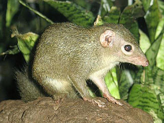

Principal Component Analysis
Radchuk Viktoriia
2023-03-16
What is PCA
- An eigenvector-based method for dimensionality reduction.
- Works on raw, quantitative data (are expected to have multivariate
normal distribution).
- It preserves Euclidian distances among sites (also known as objects
/ samples).
- It is unconstrained ordination method, i.e. an explorative tool
(used for descriptive analysis), not a statistical test.
Main requirements / assumptions
- Linear relations among variables;
- Requires quantitative data (values can also be negative);
- Requires data in same units for all variables. Otherwise, the data
has to be standardised;
- Not suitable for data sets where responses are unimodal, rather than
linear. This is often the case with compositional data, where relation
with environmental gradient cannot be approximated by linear relation
(i.e. data with many zeros).
How it works: very simplified
Objects: sites, individuals, samples
Variables: (for sites) temperature, precipitation,
human population density….
Let us have \(n\) objects and \(p\) variables. Each variable can be thought
of as a dimension, since we can look at how samples are located along
that variable. So, these \(n\) objects
can be represented in the \(p\)-dimensional space.
Multidimensional space
The method finds the direction with the largest variance in the data
(this direction is not necessarily aligned with the one of the
dimensions, i.e. variables in the data). The direction along which most
of the data variance is observed will be extracted as the first axis,
also know as the first Principal Component (PC1).
Proceeds to determine all the principal components
It then extracts the next axis, which is the second most important in
variance, given that it is orthogonal (i.e. linearly independent) to the
first one. It then goes on like that and extracts all \(p\) axes (in the decreasing order of
variance observed in the data).
Rotates original coordination system

The method then rotates original data such that x axis becomes our
Principal Component 1, y axis - PC2, etc. It also allows to see the
relation of the variables to these extracted Principal Components and
relations among the variables, in terms of how correlated they are.
Behind the scenes
Let us look at 8 objects (think of sites in which we measure
biodiversity of plants).
For simplicity, we look at 3 variables only (though in reality it is of
little use to apply PCA to these data).
Why is it not that useful?
## Temperature Sunshine Humidity
## 1 1.0 3.0 3.527327
## 2 1.5 4.0 6.874531
## 3 2.0 6.0 10.412315
## 4 2.1 2.0 5.390160
## 5 8.0 7.0 5.928831
## 6 9.0 9.8 6.831678
## 7 8.8 8.0 9.239344
## 8 10.0 5.0 8.756656
Plot data along one variable, i.e. dimension
 We see that the sites (and thus their composition - that is what we are
interested in) differ a lot depending on the temperature at the site. We
detect two groups of sites: one group of sites located in environments
with high temperatures, and the second group with lower
temperatures.
We see that the sites (and thus their composition - that is what we are
interested in) differ a lot depending on the temperature at the site. We
detect two groups of sites: one group of sites located in environments
with high temperatures, and the second group with lower
temperatures.
Plot data in 2-dimensional space

Add 3rd dimension

Back to PCA: center raw data
mean_x <- mean(Temperature); mean_x
## [1] 5.3
mean_y <- mean(Sunshine); mean_y
## [1] 5.6
dat_center <- df %>%
mutate(temp_cent = scale(Temperature, center = TRUE, scale = FALSE),
Sun_cent = scale(Sunshine, center = TRUE, scale = FALSE))
dat_center
## Temperature Sunshine Humidity plotY temp_cent Sun_cent
## 1 1.0 3.0 3.527327 0.1 -4.3 -2.6
## 2 1.5 4.0 6.874531 0.1 -3.8 -1.6
## 3 2.0 6.0 10.412315 0.1 -3.3 0.4
## 4 2.1 2.0 5.390160 0.1 -3.2 -3.6
## 5 8.0 7.0 5.928831 0.1 2.7 1.4
## 6 9.0 9.8 6.831678 0.1 3.7 4.2
## 7 8.8 8.0 9.239344 0.1 3.5 2.4
## 8 10.0 5.0 8.756656 0.1 4.7 -0.6
A little bit more of matrix algebra
NewDat <- mat_centr %*% eig$vectors
NewDat
## [,1] [,2]
## 1 5.023615 0.1152933
## 2 4.092277 -0.5032607
## 3 2.663289 -1.9891931
## 4 4.567148 1.5300857
## 5 -3.038631 0.1293224
## 6 -5.299426 -1.8016883
## 7 -4.230182 -0.3399368
## 8 -3.778090 2.8593775
Plot rotated data
Does this plot look familiar to you?
What PCA is used for
- exploration of the relations among variables;
- dimensionality reduction technique, i.e. when we want to describe 10
different variables with 2 or 3 instead (e.g. as predictors in a linear
model)
Application: life history traits of mammals in SE Asia
Investigating the relations between multiple life history traits of
mammals in Southeast Asia. Initially we were interested in 143 mammal
species. We extracted life history data from PanTheria database (Jones
et al. 2009). Due to the scarcity of the life history data, we ended up
with 25 species only.
Data
# reading in the file with the 143 species of interest
spSEAsia <- read.csv(file = here::here('data', 'Species_SEAsia_02_02_16_fin.csv'))
str(spSEAsia)
## 'data.frame': 143 obs. of 7 variables:
## $ ID : int 1 2 3 4 5 6 7 8 9 10 ...
## $ Sp_bin : chr "Aeromys tephromelas" "Arctogalidia trivirgata" "Arctonyx collaris" "Atherurus macrourus" ...
## $ Area : num 362087 2497556 5509688 2671967 362969 ...
## $ Genus : chr "Aeromys" "Arctogalidia" "Arctonyx" "Atherurus" ...
## $ Species : chr "tephromelas" "trivirgata" "collaris" "macrourus" ...
## $ Location: chr "Sunda" "Both" "Indochina" "Indochina" ...
## $ Cat5 : chr "Sunda" "Both" "Indochina" "Indochina" ...
# read in the PanTheria database
pant <- read.delim(file = here::here('data', 'Pantheria.txt'))
str(pant)
## 'data.frame': 5416 obs. of 55 variables:
## $ MSW05_Order : chr "Artiodactyla" "Carnivora" "Carnivora" "Carnivora" ...
## $ MSW05_Family : chr "Camelidae" "Canidae" "Canidae" "Canidae" ...
## $ MSW05_Genus : chr "Camelus" "Canis" "Canis" "Canis" ...
## $ MSW05_Species : chr "dromedarius" "adustus" "aureus" "latrans" ...
## $ MSW05_Binomial : chr "Camelus dromedarius" "Canis adustus" "Canis aureus" "Canis latrans" ...
## $ X1.1_ActivityCycle : num 3 1 2 2 2 2 -999 2 3 -999 ...
## $ X5.1_AdultBodyMass_g : num 492714 10392 9659 11989 31757 ...
## $ X8.1_AdultForearmLen_mm : num -999 -999 -999 -999 -999 -999 -999 -999 -999 -999 ...
## $ X13.1_AdultHeadBodyLen_mm : num -999 745 828 872 1055 ...
## $ X2.1_AgeatEyeOpening_d : num -999 -999 7.5 11.9 14 ...
## $ X3.1_AgeatFirstBirth_d : num 1652 -999 -999 365 548 ...
## $ X18.1_BasalMetRate_mLO2hr : num 40293 -999 -999 3699 11254 ...
## $ X5.2_BasalMetRateMass_g : num 407000 -999 -999 10450 33100 ...
## $ X6.1_DietBreadth : num 3 6 6 1 1 3 2 2 -999 -999 ...
## $ X7.1_DispersalAge_d : num -999 330 -999 255 180 ...
## $ X9.1_GestationLen_d : num 386.5 65 61.2 61.7 63.5 ...
## $ X12.1_HabitatBreadth : num 1 1 1 1 1 -999 -999 1 1 -999 ...
## $ X22.1_HomeRange_km2 : num 196.32 1.01 2.95 18.88 159.86 ...
## $ X22.2_HomeRange_Indiv_km2 : num -999 1.01 3.13 19.91 43.13 ...
## $ X14.1_InterbirthInterval_d : num 614 -999 365 365 365 ...
## $ X15.1_LitterSize : num 0.98 4.5 3.74 5.72 4.98 1.22 1 1.22 1.01 -999 ...
## $ X16.1_LittersPerYear : num 1 -999 -999 -999 2 1 1 1 -999 -999 ...
## $ X17.1_MaxLongevity_m : num 480 137 192 262 354 ...
## $ X5.3_NeonateBodyMass_g : num 36751 -999 212 200 412 ...
## $ X13.2_NeonateHeadBodyLen_mm : num -999 -999 -999 -999 -999 -999 -999 -999 -999 -999 ...
## $ X21.1_PopulationDensity_n.km2: num 0.98 0.74 0.22 0.25 0.01 0.54 -999 0.75 4.89 -999 ...
## $ X10.1_PopulationGrpSize : num 11 -999 -999 -999 -999 -999 -999 21 -999 -999 ...
## $ X23.1_SexualMaturityAge_d : num 1948 250 371 373 679 ...
## $ X10.2_SocialGrpSize : num 10 -999 -999 -999 -999 40 110 40 2.05 -999 ...
## $ X24.1_TeatNumber : int -999 8 8 8 9 -999 -999 -999 -999 -999 ...
## $ X12.2_Terrestriality : num 1 1 1 1 1 -999 -999 1 2 -999 ...
## $ X6.2_TrophicLevel : int 1 2 2 3 3 1 1 1 -999 -999 ...
## $ X25.1_WeaningAge_d : num 389.4 52.9 61.3 43.7 44.8 ...
## $ X5.4_WeaningBodyMass_g : num -999 -999 -999 -999 -999 -999 -999 -999 -999 -999 ...
## $ X13.3_WeaningHeadBodyLen_mm : num -999 -999 -999 -999 -999 -999 -999 -999 -999 -999 ...
## $ References : chr "511;543;719;1274;1297;1594;1654;1822;1848;2655;3044" "542;543;730;1113;1297;1573;2655" "543;679;730;1113;1297;1573;2655" "367;542;543;730;1113;1297;1573;1822;2655" ...
## $ X5.5_AdultBodyMass_g_EXT : num -999 -999 -999 -999 -999 -999 -999 -999 -999 -999 ...
## $ X16.2_LittersPerYear_EXT : num -999 -999 1.1 1.1 -999 -999 -999 -999 1.05 -999 ...
## $ X5.6_NeonateBodyMass_g_EXT : num -999 -999 -999 -999 -999 -999 -999 -999 -999 -999 ...
## $ X5.7_WeaningBodyMass_g_EXT : num -999 -999 -999 -999 -999 -999 -999 -999 -999 -999 ...
## $ X26.1_GR_Area_km2 : num -999 10581413 25739527 17099094 50803440 ...
## $ X26.2_GR_MaxLat_dd : num -999 16.7 47 71.4 83.3 ...
## $ X26.3_GR_MinLat_dd : num -999 -28.73 -4.71 8.02 11.48 ...
## $ X26.4_GR_MidRangeLat_dd : num -999 -6 21.1 39.7 47.4 ...
## $ X26.5_GR_MaxLong_dd : num -999 43.5 108.5 -67.1 179.7 ...
## $ X26.6_GR_MinLong_dd : num -999 -17.5 -17.1 -168.1 -171.8 ...
## $ X26.7_GR_MidRangeLong_dd : num -999 13 45.7 -117.6 3.9 ...
## $ X27.1_HuPopDen_Min_n.km2 : int -999 0 0 0 0 1 0 1 0 -999 ...
## $ X27.2_HuPopDen_Mean_n.km2 : num -999 35.2 79.3 27.3 37.9 ...
## $ X27.3_HuPopDen_5p_n.km2 : num -999 1 0 0 0 8 0 4 0 -999 ...
## $ X27.4_HuPopDen_Change : num -999 0.14 0.1 0.06 0.04 0.09 0.05 0.11 0.05 -999 ...
## $ X28.1_Precip_Mean_mm : num -999 90.8 44.6 53 34.8 ...
## $ X28.2_Temp_Mean_01degC : num -999 236.51 217.23 58.18 4.82 ...
## $ X30.1_AET_Mean_mm : num -999 923 438 503 313 ...
## $ X30.2_PET_Mean_mm : num -999 1534 1359 728 561 ...
## [1] 138
Species in the dataset
_female_and_young_wikip.jpeg)
@wikipedia: Elephas
maximus
@wikipedia: Canis
aureus

@wikipedia: Tupaia
glis
_wikip.jpeg)
@wikipedia: Tarsius
bancanus
Run PCA
We mainly use library vegan in R for multivariate statistics.
Function rda() is used to run PCA and RDA.
## 'data.frame': 25 obs. of 5 variables:
## $ bin : chr "Axis porcinus" "Callosciurus erythraeus" "Callosciurus nigrovittatus" "Callosciurus notatus" ...
## $ AdultBodyMass_g: num 37448 283 208 209 9659 ...
## $ LitterSize : num 1 1.94 2.36 2.62 3.74 4.3 1.41 1.02 1.01 1.02 ...
## $ DietBreadth : num 3 3 6 6 6 1 3 4 4 4 ...
## $ HomeRange_km2 : num 0.52 0.00895 0.01 0.02 2.95 ...
## - attr(*, "na.action")= 'omit' Named int [1:113] 1 2 3 4 6 7 8 9 10 11 ...
## ..- attr(*, "names")= chr [1:113] "1" "2" "3" "4" ...
traits_SEas <- LH_noNA %>%
select(-c('bin'))
pca_SEasia <- rda(traits_SEas, scale = TRUE)
Since our variables (Adult body mass, litter size, diet breadth and
home range) are in very different units, we use option ‘scale=’, so that
all variables are now unitless and comparable. In other words we are
applying PCA on correlation matrix (instead of covariance matrix).
Interpreting PCA
##
## Call:
## rda(X = traits_SEas, scale = TRUE)
##
## Partitioning of correlations:
## Inertia Proportion
## Total 4 1
## Unconstrained 4 1
##
## Eigenvalues, and their contribution to the correlations
##
## Importance of components:
## PC1 PC2 PC3 PC4
## Eigenvalue 1.756 1.3178 0.7871 0.13909
## Proportion Explained 0.439 0.3294 0.1968 0.03477
## Cumulative Proportion 0.439 0.7685 0.9652 1.00000
##
## Scaling 2 for species and site scores
## * Species are scaled proportional to eigenvalues
## * Sites are unscaled: weighted dispersion equal on all dimensions
## * General scaling constant of scores: 3.130169
##
##
## Species scores
##
## PC1 PC2 PC3 PC4
## AdultBodyMass_g 1.3521 0.03785 0.7178 -0.3236
## LitterSize 0.1864 -1.36588 -0.7041 -0.2312
## DietBreadth -0.5178 -1.13684 0.9260 0.1776
## HomeRange_km2 1.4732 -0.26151 -0.2442 0.3886
##
##
## Site scores (weighted sums of species scores)
##
## PC1 PC2 PC3 PC4
## 5 -0.19757 0.48504 0.18212 0.15041
## 12 -0.19571 0.12870 -0.14324 -0.42883
## 14 -0.38753 -0.64136 0.54898 0.21536
## 15 -0.37701 -0.74093 0.46300 0.05695
## 17 -0.23092 -1.19243 0.06243 -0.31878
## 30 1.16382 -0.63294 -1.88216 1.23211
## 35 2.63947 0.08807 1.42807 -0.61505
## 42 -0.29247 0.27630 0.43850 0.44816
## 44 -0.28865 0.27910 0.44006 0.46909
## 45 -0.29010 0.27575 0.43768 0.45582
## 46 -0.11291 0.19794 -0.53586 -0.94456
## 60 -0.21544 0.48492 0.16407 0.19169
## 62 -0.10107 0.67410 -0.13027 0.02344
## 77 -0.24905 0.26688 0.42727 0.57307
## 85 0.60166 0.31138 -0.96481 0.85470
## 86 -0.21168 -1.02981 0.19256 0.09990
## 91 -0.08663 0.89004 -0.38796 -0.45600
## 92 -0.07401 0.88704 -0.39270 -0.41369
## 94 0.02831 0.30603 -0.90366 -1.17058
## 116 -0.15381 -1.27248 -0.40756 -1.40342
## 117 -0.28906 0.27615 0.44100 0.44419
## 120 -0.23259 0.48838 0.16707 0.14825
## 126 -0.25426 -0.18155 0.04121 -0.29994
## 133 -0.14193 0.29341 0.05038 -0.22718
## 137 -0.05087 -0.91771 0.26384 0.91487
Inertia: term originates from Correspondence
Analysis (arguably some of the first multivariate analysis) and means
variation in the data. In case of PCA on covariance matrix inertia is a
sum of the variances of the variables; in case of PCA on correlation
matrix, it is the sum of the diagonal values of the correlation
matrix.
What are the values on the diagonal in such a
correlation matrix?
Interpreting PCA
##
## Call:
## rda(X = traits_SEas, scale = TRUE)
##
## Partitioning of correlations:
## Inertia Proportion
## Total 4 1
## Unconstrained 4 1
##
## Eigenvalues, and their contribution to the correlations
##
## Importance of components:
## PC1 PC2 PC3 PC4
## Eigenvalue 1.756 1.3178 0.7871 0.13909
## Proportion Explained 0.439 0.3294 0.1968 0.03477
## Cumulative Proportion 0.439 0.7685 0.9652 1.00000
##
## Scaling 2 for species and site scores
## * Species are scaled proportional to eigenvalues
## * Sites are unscaled: weighted dispersion equal on all dimensions
## * General scaling constant of scores: 3.130169
##
##
## Species scores
##
## PC1 PC2 PC3 PC4
## AdultBodyMass_g 1.3521 0.03785 0.7178 -0.3236
## LitterSize 0.1864 -1.36588 -0.7041 -0.2312
## DietBreadth -0.5178 -1.13684 0.9260 0.1776
## HomeRange_km2 1.4732 -0.26151 -0.2442 0.3886
##
##
## Site scores (weighted sums of species scores)
##
## PC1 PC2 PC3 PC4
## 5 -0.19757 0.48504 0.18212 0.15041
## 12 -0.19571 0.12870 -0.14324 -0.42883
## 14 -0.38753 -0.64136 0.54898 0.21536
## 15 -0.37701 -0.74093 0.46300 0.05695
## 17 -0.23092 -1.19243 0.06243 -0.31878
## 30 1.16382 -0.63294 -1.88216 1.23211
## 35 2.63947 0.08807 1.42807 -0.61505
## 42 -0.29247 0.27630 0.43850 0.44816
## 44 -0.28865 0.27910 0.44006 0.46909
## 45 -0.29010 0.27575 0.43768 0.45582
## 46 -0.11291 0.19794 -0.53586 -0.94456
## 60 -0.21544 0.48492 0.16407 0.19169
## 62 -0.10107 0.67410 -0.13027 0.02344
## 77 -0.24905 0.26688 0.42727 0.57307
## 85 0.60166 0.31138 -0.96481 0.85470
## 86 -0.21168 -1.02981 0.19256 0.09990
## 91 -0.08663 0.89004 -0.38796 -0.45600
## 92 -0.07401 0.88704 -0.39270 -0.41369
## 94 0.02831 0.30603 -0.90366 -1.17058
## 116 -0.15381 -1.27248 -0.40756 -1.40342
## 117 -0.28906 0.27615 0.44100 0.44419
## 120 -0.23259 0.48838 0.16707 0.14825
## 126 -0.25426 -0.18155 0.04121 -0.29994
## 133 -0.14193 0.29341 0.05038 -0.22718
## 137 -0.05087 -0.91771 0.26384 0.91487
Eigenvalues: Measure the importance of each
principal component, i.e. how much variance it captures. Also shows
proportion explained by dividing by the total inertia.
Species scores: coordinates (in the new rotated space)
of the arrow heads of the variables. Term ‘Species’ is a legacy-term and
has its name because the first multivariate methods were originally
developed for analyses of communities composed of species. So, the term
‘Species’ is usually used to refer to the response variables
(irrespective of what they represent).
Site scores: Coordinates of the sites in the new
ordination space. ‘Sites’ are used to refer to objects, or samples.
(here, our species, actually!)
Scaling 1 and 2 in PCA
- Scaling 1: distance biplot. Eigenvectors are scaled
to unit length. Distances among objects approximate their
Euclidian distances in multidimensional space. The angles among
vectors are meaningless.
- Scaling 2: correlation biplot. Each eigenvector is
scaled to the square root of its eigenvalue. The angles between
vectors (variables) reflect their correlations. Distances among
objects are not approximations of their Euclidian distances in
multidimensional space.
- So: if interested in relationships among objects primarily, choose
scaling 1. If interested in the relations among descriptors
(i.e. variables), choose scaling 2.
How many Principal Components to retain?
Usually the researcher looks at the eigenvalues and decides how many
axes are worth displaying. PCA is not a statistical test, so the
decisions can be based on a (rather arbitrary) choice to display certain
percentage of total variance in the data. Say, 75% of the data variance.
Then, one displays as many principal components, as needed, to reach a
total of 75% of data variance.
Two other commonly used approaches: Kaiser-Guttman
criterion and a broken stick model.
Kaiser-Guttman criterion
Based on the mean of all eigenvalues. The principal components whose
eigenvalue is > this mean are used for displaying.
# extract eigenvalues
eigval <- pca_SEasia$CA$eig
eigval[eigval > mean(eigval)]
## PC1 PC2
## 1.756083 1.317759
barplot(eigval, las = 2)
abline(h= mean(eigval), col = 'blue', lwd = 2)
A broken-stick model
This method randomly divides a stick of unit length in the same number
of pieces as there are Principal Components. The pieces are then sorted
in the decreasing order and compared to the eigenvalues. Only those
principal components are chosen to be displayed that are larger than the
respective piece of the stick.

## PC1 PC2 PC3 PC4
## 2.0833333 1.0833333 0.5833333 0.2500000
## PC1 PC2 PC3 PC4
## 1.7560827 1.3177588 0.7870678 0.1390907
Visualize PCA results
biplot(pca_SEasia, scaling = 'species')
 Why do we use scaling = ‘species’?
Why do we use scaling = ‘species’?
Check-up
- What are assumptions of PCA?
- Can we conduct PCA if several variables are strongly correlated
(i.e. considered a problem of collinearity in GLMMs)?